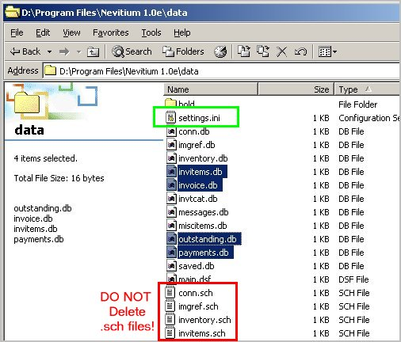

|
|
Technical Notes
Invoice Number If you have to change the invoice number you need to modify the
settings.ini file.
 NOTE: The highlighted (selected) .db files (settings.ini excluded) can be deleted at year end (or after several years) to start with a fresh empty invoice database. Make sure you print reports or backup/export your old data before deleting it. You are on your own here; you must keep records for seven years. I DO NOT recommend that you delete settings.ini since it would be inconvenient to reconfigure your settings. WARNING:
|